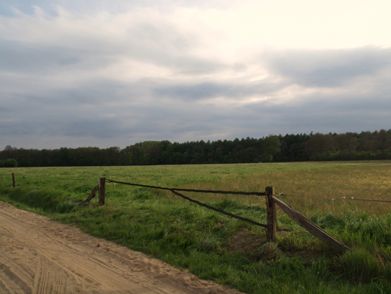

Field Gate
The assignment was to reinterpret the typical Twents (a region in the Netherlands) regional field gate, in three man teams. This assignment was
a 3-day workshop by the department of Public Space together with Landschap Overijsel.
Petra hekkenberg, Dorus Faber and I were a team for this assignment.
The program behind this assignment was to create a new gate at a field owned by a farmer who collected subsidies by giving this field back to
nature. The number of rare species found in the field influences the amount of subsidies. This field was fenced off with electrical band used to
fence in horses because part of the year horses would be kept on the field.
The traditional field gates are made of heavy oak beams and planks. In this context we felt such a heavy gate would disrupt the view and therefore
the experience of this field, which is after all intended to be a beautiful and wild bit of nature. A big wooden gate would also contrast dramatically
with the thin strip of electrical band that is the rest the fence. The standard gate used in the fences of electrical band is a simple plastic grip w
ith a metal hook.
We chose to use the material of the fence, the electric band and weave it into the shape of an iconic fence. Weaving the electric band ensures the
continuation of the electrical circuit; a wooden fence would need the addition of an electrical wire to discourage the horses from accidentally breaking
or jumping the fence. In the lower branch of the gate the metal wires were cut so that the electrical current cannot leak away into wet long grass. So
only the straight top branch of the gate conducts the electrical current. The gate is still flexible which improves ease of use, with horses the gate can
be unhooked and dropped so there is no gate to move around and you do not have to let go of the reins of the horse.
Petra contacted the manufacturer of the electrical band, they were positive about the gate and feel that we came up with an good alternative to wooden or
metal gates and the simple plastic grip.